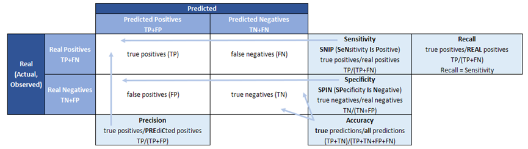

Week 7 - Classification II
7.1 Summary
Object Based Image Analysis (OBIA)
Determines the number of superpixels (k) by considering similarities or differences between cells (pixels)
The SLIC algorithm, Simple Linear Iterative Clustering, is the most common method for generating superpixels.
Pixels in an image are iteratively assigned to the center of the nearest superpixel while ensuring that the generated superpixels are color and spatially consistent.
Objects are categorized using the extracted features and the calculated mean.
Sub Pixel Analysis
- Sub pixel classification = Linear spectral unmixing = Spectral Mixture Analysis (SMA) - determines the proportion or abundance of landcover per pixel
Accuracy assessment

(Source: Cross Validated, 2024)
Errors of omission = False Negative (FN) = Type II Error
Errors of commission = False Positive (FP) = Type I Error
Kappa
Indicates the accuracy of the image compared to chance results
Ranges from 0 to 1: The closer the Kappa is to 1, the higher the agreement between evaluators.
Data is not balanced
Very high producer accuracy (recall) and very high user accuracy (precision) cannot exist at the same time.
Model with high recall (Producer accuracy) = true positives but some false positives (predicted urban but land cover that isn’t urban)
Model with high precision (User’s accuracy) = actual urban but predicted other landcover
User’s Accuracy (Precision) = \(\frac{TP}{TP + FP}\)
Producer’s Accuracy (Recall) = \(\frac{TP}{TP + FN}\)
The F1-Score (or F Measure) combines both recall (Producer accuracy) and Precision (User accuracy)
F1 = \(\frac{TP}{TP + \frac{1}{2}(FP + FN)}\)
Value from 0 to 1, where 1 is better performance
No True Negatives (TN) in the equation
Precision (producer): how many positive points are correct
Recall (user): how precise the model is at positive predictions
How do we get test data for the accuracy assessment?
Same process for all:
Class definition
Pre-processing
Training
Pixel assignment
Accuracy assessment
Consider a sampling strategy
Random sampling
Systematic sampling
Stratified sampling
Jensen
What data are used to assess the accuracy of classification models
Train and test split
Best approach - cross validation: take the mean accuracy
Leave one out cross validation: Each sample in turn is left as a test set while all the remaining samples constitute the training set. This process is repeated until each sample has been validated once as a test set.
Spatial cross validation
Avoided training data and test data close to each other (There can be spatial autocorrelation)
If a classificaiton model doesn’t consider spatial autocorrelation: The model will have better accuracy that it actually does.
7.2 Application
This week explores OBIA related applications and future directions. When I was searching for OBIA related literature, I found that OBIA has a wide range of applications involving environmental monitoring, land cover, etc. I was most interested in the article I read about snowpack.
Thompson and Lees (2014) investigated an object-based image analysis technique for extracting snowpack features from remotely sensed data. The technique mostly accurately matched field observations, although the correlation was weak for short-term snowpack. However, the method is not seasonally restricted and effectively identified transient snowpack events at the beginning and end of the season in 2009. This study contributes to a better understanding and prediction of how climate change affects snowpack patterns.

(Thompson and Lees, 2014)
Not only that, OBIA is also linked to machine learning.Liu, et al. (2019) study proposed a new method combining Object-Oriented Image Analysis (OBIA) and Convolutional Neural Networks (CNNs) for land use and land cover (LULC) mapping using Sentinel optical and synthetic aperture radar (SAR) data. The method solves the problem of mismatch between CNN processing units and OBIA processing units by labeling each image object after the CNN generates the classification map. The method outperforms the traditional OBIA support vector machine (SVM) and random forest (RF) algorithms in terms of classification accuracy. In addition, it can effectively extract spatial features and maintain target boundaries, which significantly improves the classification accuracy of urban ground targets. This study provides future assistance when dealing with complex urban landscapes and contributes to understanding and managing land cover changes during urbanization.
Ez-zahounai et al. (2023) stated that the future research trend in OBIA is to combine it with deep learning in order to improve the accuracy, efficiency and interpretability of image analysis while reducing the reliance on large amounts of labeled data. However, this will be a challenge due to the lack of interpretability of deep learning.
7.3 Reflection
I feel that this class is quite interesting, object-based image analysis, I reviewed a lot of literature, I know that it is used in many aspects, and it is combined with machine learning is the trend of the future development, but sub-pixel analysis, I due to the limited time this week, I did not study the relevant knowledge and application of the knowledge, and I know that he has contributed to the land cover, I am curious to see what methods it can be combined with and in what areas it can be used to make great advances. In addition, this class also involves spatial interaction, related to spatial autocorrelation, which is very familiar to me, and this knowledge I have learned in the first semester of spatial autocorrelation and spatial regression analysis. So it is tempting to apply this spatial cross-validation to my thesis: spatial differentiation of house prices and the factors affecting it, which can better reflect the performance of the model in spatial data.
7.4 References
Cross Validated (2024) Available at: https://stats.stackexchange.com/questions/122225/what-is-the-best-way-to-remember-the-difference-between-sensitivity-specificity (Accessed: 8 March 2024).
Ez-zahouani, B., Teodoro, A., Kharki, O. E., Liu, J. H., Kotaridis, I., Yuan, X. H. and Ma, L. (2023) ‘Remote sensing imagery segmentation in object-based analysis: A review of methods, optimization, and quality evaluation over the past 20 years’, Remote Sensing Applications: Society and Environment, 32, 101031.
Liu, S. J., Qi, Z. X., Li. X. and Yeh, A. G. (2019) ‘Integration of Convolutional Neural Networks and Object-Based Post-Classification Refinement for Land Use and Land Cover Mapping with Optical and SAR Data’, Urban Remote Sensing, 11(6), 690.
Thompson, J. A. and Lees, B.G. (2014) ‘Applying object-based segmentation in the temporal domain to characterise snow seasonality’, ISPRS Journal of Photogrammetry and Remote Sensing, 97, pp. 98-110.